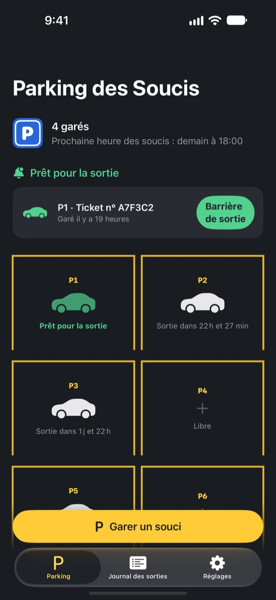
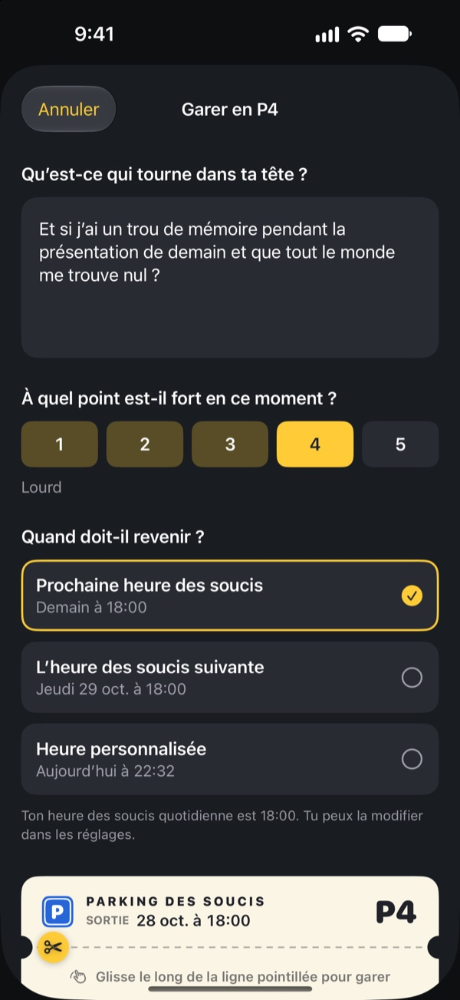
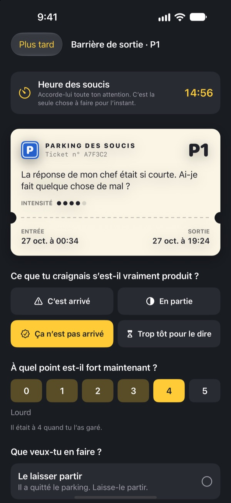
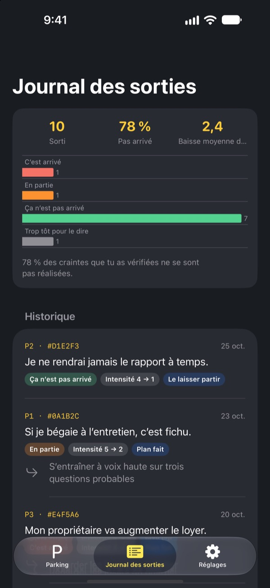

Gare ton souci.
Reprends-le plus tard.
Écris ce qui tourne dans ta tête au moment de dormir et laisse-le sur un ticket de parking. On te le rend à ton heure des soucis. D’ici là, tu n’as pas à le porter.
Toutes les fonctions sont gratuites. Pas de pub, pas de compte.

Gare un souci
Garde l’exemple ou écris ce qui t’occupe l’esprit en ce moment. Une fois garé, il devient flou, et tu le ressors à l’heure des soucis.
Lumière éteinte, tête allumée ?
À peine la tête sur l’oreiller, ça commence : une phrase dite dans la journée, la réunion de demain, le message resté sans réponse. Plus tu te dis de ne pas y penser, plus ça prend de place. Parking des Soucis ne te demande pas de chasser le souci. Tu l’écris, tu lui donnes une place et tu prévois un moment pour t’en occuper.
Une fois écrit, il sort de ta tête
Écris-le tel qu’il résonne dans ta tête, puis indique son intensité de 1 à 5. Détache le ticket : le souci reste au parking, flouté.
S’il revient tourner autour de toi, dis-lui : tu as déjà ta place. Son moment viendra, mais pas maintenant.

15 minutes à l’heure des soucis
Chaque jour à ton heure des soucis, tu reçois un rappel. À la barrière de sortie, tu relis le souci, tu vérifies s’il s’est vraiment produit et à quel point il résonne encore.
Ensuite, tu le laisses partir, tu en fais une petite prochaine étape ou tu le gares jusqu’à la prochaine heure des soucis.

Vois combien de soucis se sont réalisés
Au fil des sorties, le journal des sorties montre la part des soucis qui se sont vraiment produits et de combien leur intensité a baissé.
Le souci imagine souvent l’avenir pire qu’il ne sera. Plus tu notes, moins tu crois le suivant.

Trois étapes pour commencer
- 1
Choisis ton heure des soucis
À la première ouverture, choisis quand tu t’occuperas de tes soucis chaque jour. Tu pourras la changer dans les réglages.
- 2
Gare un vrai souci
Gare tout de suite ce qui te préoccupe et observe comment son intensité change avant et après.
- 3
Autorise les rappels de sortie
À l’heure des soucis, un rappel arrive avec seulement le numéro de la place.
Pourquoi ça marche
- S’inquiéter à heure fixe
- Les personnes qui ont déplacé leurs soucis vers un court moment quotidien s’inquiétaient moins et signalaient moins d’anxiété et de troubles du sommeil. (Borkovec et al., 1983 ; McGowan & Behar, 2013)
- Écrire pour lâcher prise
- Un plan concret empêchait les tâches inachevées d’envahir les pensées, et cinq minutes d’écriture avant le coucher aidaient à s’endormir plus vite. (Masicampo & Baumeister, 2011 ; Scullin et al., 2018)
- Vérifier ce qui s’est vraiment passé
- Quand des personnes très anxieuses ont noté leurs soucis, 91 % ne se sont pas réalisés. (LaFreniere & Newman, 2020)
Parking des Soucis s’appuie sur le report des soucis, une technique des thérapies cognitives et comportementales (TCC) étudiée depuis des décennies.
Tout est gratuit
Gratuit
- Places de parking illimitées
- Rappels quotidiens à l’heure des soucis, heure de sortie au choix
- Barrière de sortie et journal des sorties
- Analyses des sorties : combien se sont réalisés, de combien l’intensité a baissé
Un pourboire, si tu veux
- Si l’app t’aide, tu peux laisser un petit pourboire au développeur
- Petit, moyen ou grand, au choix
Le pourboire ne débloque rien. Tout fonctionne pareil sans.
Pas de pub, pas de compte, pas de serveur, pas d’outil d’analyse. Tout ce que tu écris reste sur ton iPhone.
Questions fréquentes
Comment changer mon heure des soucis ?
Dans l’onglet Réglages, à Heure des soucis. La nouvelle heure s’applique aux soucis garés ensuite. Ceux déjà garés gardent leur heure de sortie d’origine.
Je ne reçois pas les rappels de sortie.
Vérifie la rubrique Notifications dans l’onglet Réglages. Si elles sont coupées, touche Ouvrir les réglages iOS et active-les. Avec un mode Concentration ou Ne pas déranger, les rappels peuvent arriver en silence. Même sans rappel, les soucis arrivés à échéance apparaissent prêts à sortir dans le parking.
Mon souci apparaît-il dans la notification ?
Non. Les notifications n’affichent que le numéro de place, par exemple « P3 est prête à sortir ». Le souci lui-même n’apparaît qu’une fois l’app ouverte, à la barrière de sortie.
Puis-je relire un souci avant l’heure prévue ?
Touche sa voiture dans le parking et choisis L’envoyer maintenant à la barrière de sortie. Le report marche toutefois mieux quand on attend. La plupart des soucis paraissent plus petits à l’heure des soucis.
Puis-je transférer mes données sur un nouvel iPhone ?
Tout est stocké uniquement sur ton iPhone, sans compte ni synchronisation. Si tu restaures un nouvel iPhone depuis une sauvegarde iCloud ou ordinateur, ou avec Démarrage rapide, les données suivent avec celles de tes autres apps.
Comment supprimer mes données ?
Dans l’onglet Journal des sorties, balaie une entrée vers la gauche pour la supprimer. Supprimer l’app efface tout.
Est-ce une thérapie ?
Parking des Soucis est un outil d’aide personnelle fondé sur le report des soucis issu des TCC. Ce n’est pas un dispositif médical et il ne remplace pas un diagnostic ni un traitement par un professionnel.
Et si ça ne va vraiment pas ?
Si les soucis envahissent tes journées ou si tu penses à te faire du mal, ne reste pas seul avec ça. En France, appelle le 3114 (numéro national de prévention du suicide, gratuit, 24 h/24), ou le 15 ou le 112 en cas d’urgence.
Une question, une idée ? Écris à leeo@kakao.com.